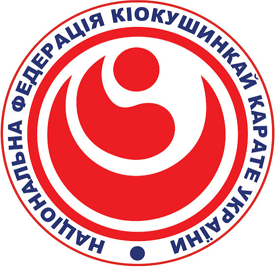

Кіокушинкай карате, що в буквальному перекладі з японської мови означає «Товариство абсолютної істини», на сьогодні визнано одним із найжорсткіших, безкомпромісних та найпопулярніших стилів повноконтактного бойового мистецтва на планеті.
Ця унікальна тренувальна та філософська система народилася в Японії в середині XX століття як радикальна відповідь на стрімку модернізацію та спортивізацію традиційного карате, яке, на думку реформаторів, поступово втрачало свій первісний бойовий дух, перетворюючись на безпечну та занадто умовну безконтактну гру.
Творцем цієї революційної системи став легендарний майстер корейського походження Масутацу Ояма (справжнє ім'я Чхве Йон Ий), чия біографія лягла в основу філософського фундаменту стилю. Глибоко розчарувавшись у тогочасних правилах змагань (сун-доме), які вимагали зупиняти удар за кілька сантиметрів до тіла суперника, Ояма проголосив, що карате без реального повного контакту втрачає свою сакральну суть, прикладне значення і перетворюється на звичайний бальний танець. Для перевірки та загартування власних можливостей майстер усамітнився на горі Міномі на довгі 18 місяців, де в умовах жорсткого аскетизму тренувався по 12 годин щодня, розбивав річкову гальку голіруч, наносив тисячі ударів по стовбурах дерев та медитував годинами під крижаними гірськими водоспадами. Щоб довести всьому світові абсолютну дієвість свого дітища, Ояма згодом провів демонстраційні поєдинки з 52 розлюченими биками, кільком з яких відрубав роги ударом ребра долоні, а під час масштабного американського турне здобув перемогу у 270 послідовних боях проти найкращих боксерів, борців та реслерів, за що світова преса захоплено охрестила його «Божественною рукою».
Філософська парадигма Кіокушинкай глибоко вкорінена в суворих заповідях середньовічного самурайського кодексу Бусідо та практиках дзен-буддизму, де кінцевою метою тривалих виснажливих тренувань проголошується не фізична перемога над суперником на татамі, а повне подолання власного егоїзму, страху, ліні та внутрішніх слабкостей. Головним візуальним символом стилю є емблема «Канку», яка графічно відтворює початкову позицію однойменного ката, де підняті до неба руки утворюють коло: її загострені вершини уособлюють пікові точки майстерності та прагнення до досконалості, широкі частини зап’ясть — силу і міцну основу, а центральне коло — безкрайність навколишнього простору. Важливою частиною ритуалу Кіокушину є «Додзьо Кун» — урочиста клятва з семи постулатів, написана Оямою у співавторстві з видатним японським письменником Ейджі Йосікавою, яку учні хором проголошують наприкінці кожного заняття, зобов'язуючись виховувати непохитний дух, неухильно дотримуватися правил етикету, поважати старших за віком і рангом та повністю утримуватися від немотивованого насильства у повсякденному житті.
Технічний арсенал цієї системи традиційно тримається на непорушній триєдиній структурі, яка гармонійно поєднує «Кіхон» (базову техніку шліфування траєкторії ударів, блоків та стійок у повітрі), «Ката» (складні формальні комплекси рухів, що є своєрідною медитацією в русі та приховують реальні бойові зв'язки «Бункай») і «Куміте» (практичний повноконтактний поєдинок). Кіокушинкай заслужено завоював всесвітню славу «нокаутуючого карате», оскільки дорослі майстерські змагання проходять у максимально наближених до реального бою умовах: каратисти виходять на татамі без шоломів, рукавичок та будь-яких захисних щитків. Чинні правила дозволяють наносити потужні нокаутуючі удари руками й ліктями в корпус, а також нищівні удари ногами й колінами на всіх рівнях, включаючи руйнівні лоу-кіки по стегнах і блискавичні хай-кіки в голову; єдиним суворим та принциповим обмеженням є абсолютна заборона на прямі удари руками в обличчя та шию, що було впроваджено Оямою виключно для уникнення важких каліцтв та збереження здоров'я бійців.
Найвищим, майже недосяжним вінцем випробування людського духу й тіла в цій системі вважається легендарний іспит «Хякунін-куміте» — безперервний тест із 100 повноконтактних боїв. Претендент на це звання зобов'язаний вистояти на татамі проти ста абсолютно свіжих суперників, які змінюються кожні півтори-дві хвилини, і при цьому не просто вижити чи пасивно захищатися, а демонструвати високу техніку та виграти або звести в нічию більше половини з усіх проведених поєдинків. Цей унікальний екзамен на чисту людську витривалість, незламність волі та здатність діяти за межею повного виснаження, який першим в історії три дні поспіль проходив сам Масутацу Ояма (проводячи по 100 боїв щодня), за всі десятиліття існування стилю успішно склали лише кілька десятків майстрів у всьому світі, через що він назавжди залишився еталоном абсолютного тріумфу людського духу над фізичною культурою тіла.
